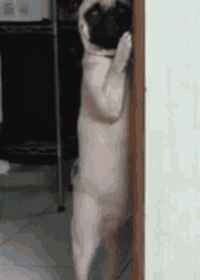
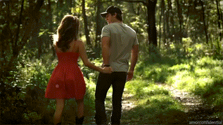

As Lola headed towards the cottage, she could hear the footsteps of the person behind her getting closer. She flung open the front door and hid inside an old dusty chest that was in the living room. The crack in the lid provided Lola with just enough visibility to see the stranger follow in behind her.
Eeeeeeeeeeek!!!
She covered her mouth to silence her heavy breathing as terror coursed through her veins. The stranger stood in the middle of the living room and quietly said “Lola… Why are you hiding?” To Lola’s surprise there was a familiarity to the voice. The moonlight was just bright enough for here to make out the facial features of this unidentified person.
Why do I know that voice?
Much to her relief it was her dear friend Edward. Lola opened the lid causing Edward to jump with fright “What the hell are doing in there?!” he asked. “Hiding from you, you creep!! Why didn’t you tell me it was you following behind me? Wait… Why
were you following me?” she replied. “I had a bad feeling about you going off alone so I figured I would keep an eye on you from a distance. When you took off running, I feared for the worst. I just wanted to keep you safe is all--” Edward shyly stated. A smile slowly spread across Lola’s face as she approached Edward and placed an arm around him. “Thanks Ed, let’s get out of here.”
Does this spark ignite? Click to see more!